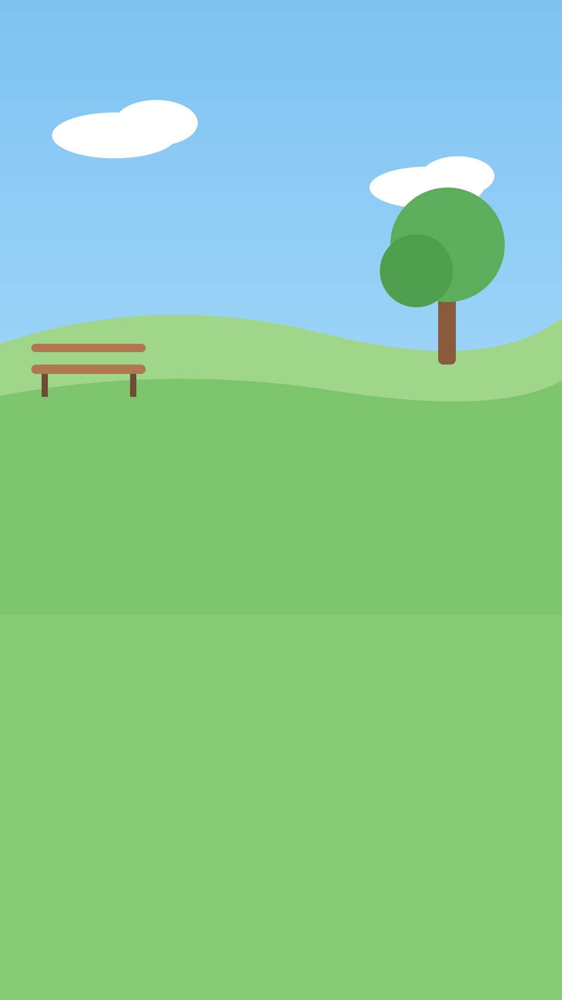

For Loops
Python
Fed
0
/5
feed.py
1
cats
= [
"Mochi"
,
"Nori"
, ...]
2
for
cat
in
cats
:
3
feed
(
cat
)
4
print
(
"All fed!"
)
> All fed!
Each pass feeds
one
cat
The loop ends after the
last
cat
5 cats
one loop, no copy paste